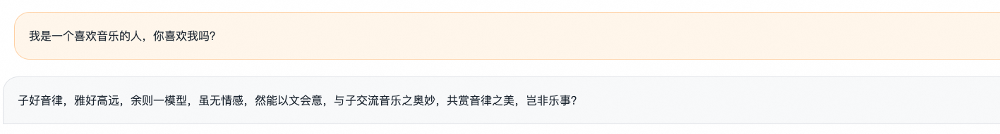
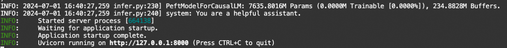

训练一个古文翻译腔机器人¶
介绍¶
在本文中，我们利用前面的知识，训练一个古文翻译腔机器人。在这里我们有几个要达到的目标：
- [数据准备]准备好古文翻译腔数据集
- [训练]用这个数据集训练一个模型，并人工评估这个模型是否达到训练目标
- [部署]对训练完成后的模型进行部署，并使用OpenAI的接口进行调用和访问
- [界面化]使用web-ui完成上面的流程
古文翻译腔¶
古文翻译腔是我们学习文言文中经常看到的腔调，类似于古早的欧美译制腔，古文翻译腔也有一定的回复风格。
比如：
- 夸张的对比和人生哲理：
-
“来自东方的伟大将领可以举起巨大的锤子在敌军中肆意厮杀，甚至战神看到了也感到啧啧称奇，世界上的成功，正是这样的人才能做到啊！”
-
双重否定和排比句：
-
“优秀的实验结果难道不是需要努力实践与学习而得到的吗？这世界上有知识是可以不通过刻苦奋斗而习得的吗”
-
感慨：
- “嗟乎！本科后面读硕士，硕士后面读博士，这不过就是人生的轨迹罢了！”
下面我们就让模型学废这种调调。
什么时候模型需要训练？
- 垂直类目的数据集，在基模型中不包含该类知识
- 更优质的数据集，可以让基模型有更好的效果
- 某种特定的问答范式，基模型通过prompt-engineering无法拟合该范式
因此，古文翻译腔可以看做是“某个需要角色扮演的微信小程序的后台服务需求”的场景。
环境¶
- 系统：任何系统均可，推荐使用魔搭镜像
- 显卡：推荐A10、RTX3090、RTX4090、A100等
- 模型：qwen2-7b-instruct
- 框架：魔搭轻量训推框架SWIFT
环境安装¶
推荐使用魔搭notebook环境。有50小时的A10（24G）算力，作为本项目的训练环境绰绰有余。

准备¶
在进行训练之前，请保证已经对训练的基本知识是了解的，否则请查看下面的文档教程：
数据¶
这里我们使用的数据集是古文翻译腔数据集。该数据集的assistant部分对话在保留了回复含义的情况下，增加了许多古文腔调的回复，例如：
可以看到，该数据集是一个标准的多轮对话数据集。这样的数据集在训练中，一般会让每一轮的assistant都参与loss计算。
在本实验中，我们已经把该数据集加入到了SWIFT中，通过指定--dataset classical-chinese-translate就可以直接使用。
训练¶
为了节省显存，我们选用了LoRA而非全参训练。我们直接给出可用于训练的脚本：
使用单卡进行训练，大概占用18G显存，训练时长40分钟。
推理和评估¶
接下来我们看看训练的效果如何。由于我们训练的是非标准数据集，我们很难以标准评测（如CEval等）来给出训练的好与坏，但是我们仍然可以通过人工推理并评估来衡量训练是否达到效果。
对训练之后的checkpoint（检查点文件）进行推理，需要使用下面的命令：
下面我们用几个简单的问题来试试模型是否已经学废了：
- 你是谁？

- 我是一个喜欢音乐的人，你喜欢我吗？
- 130+3445等于多少？
- 怎么做西红柿炒鸡蛋？

- 树上有十只鸟，用枪打死一只，还剩多少只？
好的，看来效果不错，已经学废了。推理占用了大约17G显存。
我们接下来看下原模型的效果。为了让qwen2-7b-instruct能够尽量模拟古文翻译腔调，我们在推理时使用了system：
你是一个用古文翻译腔回复的模型，你的回复腔调需要类似：
“我听说在量子力学中，一个粒子的位置和动量是永远不能同时测得的啊！世间万物，又怎么会有两全其美的法则呢？”
- 你是谁？
- 我是一个喜欢音乐的人，你喜欢我吗？

- 130+3445等于多少？

- 怎么做西红柿炒鸡蛋？

- 树上有十只鸟，用枪打死一只，还剩多少只？
我们可以看到，古文翻译强调基本无法通过prompt-engineering来解决，原模型的训练语料中应该包含了文言文语料，但没有包含翻译腔语料，因此无论怎么提示模型都无法回复出想要的结果。
训好的模型在魔搭上也可以找得到：Qwen2古文翻译腔7B
部署¶
模型训练好后，需要进行部署才能在生产条件下使用。这里我们说的生产条件指的是实际的应用环境，比如：给APP提供服务等。部署指的是将模型以服务的形式拉起，并稳定运行，提供HTTP接口给外部环境。
一般而言，目前的服务均提供符合OpenAI格式的标准接口。
部署过程如果写代码非常复杂，因为涉及到编写HTTP服务、拉起模型、推理优化等多个层面的工作。不过幸好我们有命令行：
执行后会打印一大堆log，等待打印结束：

可以看到输出了一个地址，这时候表示服务已经运行起来了。
下面我们使用一个脚本进行测试：
这模型还真啰嗦和无聊🤷🏻♀️
界面化¶
上面的步骤也可以完全通过界面来进行。该方式对熟悉界面操作的同学会比较友好。使用界面可以通过下面的命令来进行：
上面的命令会自动打开一个网页：

重点在于选择模型和数据集，之后将LoRA目标模块设置为ALL，即可点击开始训练。点击后运行时tab会自动打开，点击展示运行状态后会输出日志和训练图谱：

同样，也可以通过web-ui使用部署、量化、评测等一些列能力，这里就不赘述了。
思考¶
我们先做一个总结：
我们在上面通过LoRA的方式微调了千问2-7B模型，产出了一个古文翻译腔模型，并对它进行了部署。但是如果仔细思考整体流程，我们还是有很多问题可以提出。
- 为什么在训练后，模型不再回答自己是“通义千问模型”，而回答自己叫“小明”，是一个“大学生”？
- 如何利用多卡对模型进行并行训练，提高训练速度？
- 在这里我们把LoRA的目标模块设置为ALL，代表模型中所有的Linear模块，如果设置为DEFAULT，则只对Attention部分应用LoRA，不对MLP应用LoRA，此时模型训练会有什么样的影响？使用全参数微调又会有什么样的影响？
- 我们使用了微调来实现了古文翻译腔效果，那么微调和人类对齐的应用场景有哪些不同呢？实现古文翻译腔应当使用微调还是人类对齐？如果使用人类对齐，数据集应该做怎样的转换，又如何进行训练呢？
实践¶
利用魔搭社区的开源LLM和数据集训练一个模型，并利用训练出的模型搭建一个小应用。
要求：
- 使用魔搭社区的开源模型和训练框架SWIFT
- 可以使用LLM模型和MLLM（多模态模型）
- 使用魔搭社区的开源数据集，如有其他开源数据需要先上传到社区变为开源数据集
- 训练后的模型提交到魔搭社区的模型库中，模型自述文件（README.md）需要写好，给出训练命令和数据集链接
TIPS¶
为了能够训练出一个好玩的模型并搭建一个小应用，一般的步骤为：
- 选择（或生成）好自己的数据集
一个数据集一般是问答式的，建议数据集格式使用下面的格式，其中第一行中带有一个额外的system字段：
上面的数据集包含了两行数据，每一行都是一个json格式，这个文件的格式叫做jsonline(示例文件名：train.jsonl)
这个格式可以被SWIFT直接使用。只需要指定：
//使用本地文件
--dataset ./train.jsonl
//如果上传到社区数据集中，使用魔搭社区的数据集id
--dataset swift/classical_chinese_translate
上面的两种方式都是可以的
如何生成自己的数据集：
- 在开源社区中找到自己需要使用的数据集
- 这类数据集可能目前SWIFT并不支持，需要自己写一下前处理方法并注册，参考文档自定义数据集
- 使用GPT4、Claude、通义千问等大模型生成或改进一个数据集
- 这种方式可以使用两种方案：
- 使用界面手动输入一个需求，让模型帮忙生成数据，这种方式要一条一条生成，生成的数据集不会太大
- 使用API进行调用，让模型帮忙生成数据，这种方式需要编写一定的代码，而且需要购买，但生成的数据集可以很大
- 比如输入给GPT4：下面的对话中，你是一个小说作者。现在，我需要你生成一个金庸口吻的短武侠小说，该小说需要有完整的人物，和一个引人入胜的剧情。在剧情中可以给出遗憾、愤怒、悲伤等情绪，小说在1000字以内。下面是一个例子：......
- 在GPT4生成数据集的提示中，给出1-shot或few-shot的形式会比较有帮助。1-shot或few-shot就是上面给出的”下面是一个例子：......“的形式，这会让模型更好的模仿你的例子并理解你的需求。
- 自行制作数据集
- 比如使用各类书籍或刊物、论文等，自行进行标注，或利用原有数据中的特性生成数据集。举个例子：使用论文其他部分的文字生成abstract，论文本（除abstract外）身的文字是query，abstract就是response（待训练的部分）。不过这类数据集需要保证数据来源是没有侵权的，且可能有额外的处理步骤（如数据去重、pdf转文字、低质量数据过滤等）
- 将数据集变为框架支持的标准格式并上传魔搭的数据集社区
经过第一点后，假设我们已经有了一个数据集文件，名字为train.jsonl。下面就需要把这个数据集传入魔搭社区，数据集的上传可以参考数据上传和数据卡片。
- 使用SWIFT命令开启训练，训练后的模型上传到社区模型库中。下面的例子给出了一个基本的LoRA训练的命令：
swift sft \
--model_type qwen2-7b-instruct \
--dataset swift/classical_chinese_translate \
--num_train_epochs 1 \
--max_length 1024 \
--lora_target_modules ALL \
--gradient_accumulation_steps 16 \
--eval_steps 100 \
--save_steps 100
模型训练完成后需要上传模型库，可以参考文档模型上传和模型卡片。
- 搭建一个小应用。
如果是基本的聊天机器人，可以直接使用swift web-ui命令中的部署界面实现，该界面支持多模态LLM和文本LLM的部署和后续推理。
如果是更复杂的界面小应用，需要编写gradio、streamlit、html5等界面并搭配一定的模型服务。
附录¶
下面是可能用到的一些使用文档：